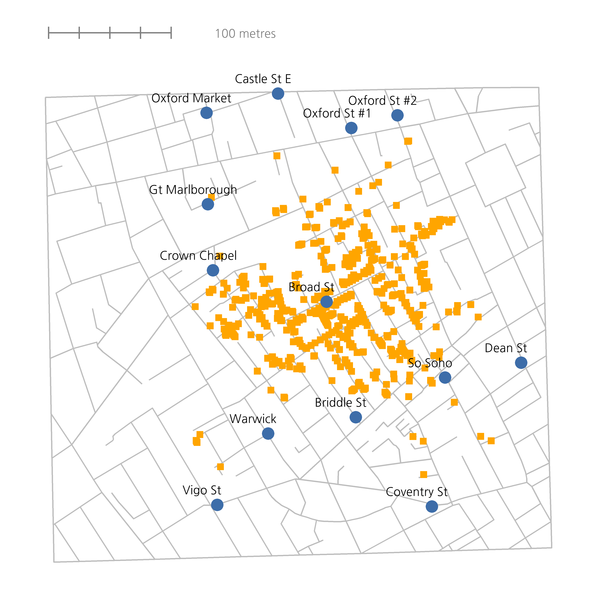
5 그래프 그리기
무엇보다 데이터를 보여주어라.
-- 에드워드 터프티
데이터를 시각화하는 것은 데이터 분석가가 직면하는 가장 중요한 작업 중 하나입니다. 그 이유는 두 가지입니다. 첫째, “프레젠테이션 용 그래픽”을 그리는 것입니다. 데이터를 깔끔하고 시각적으로 매력적으로 표시하면 독자가 전달하려는 내용을 더 쉽게 이해할 수 있습니다. 둘째, 그리고 아마도 더 중요한 이유는 그래프를 그리는 것이 데이터를 이해하는 데 도움이 되기 때문입니다. 이러한 목적을 위해 “탐색적 그래픽”은 분석 과정에서 데이터를 이해하는 데 도움을 주어야 합니다.
이 장의 중요성을 강조하기 위해, 강력한 그래프가 얼마나 큰 영향을 미칠 수 있는지를 보여주는 고전적인 사례를 소개하겠습니다. Figure 5.1 은 역사상 가장 유명한 데이터 시각화 중 하나인 존 스노우의 1854년 콜레라 사망 지도를 다시 그린 것입니다. 이 지도는 단순함 속에서 우아함을 보여줍니다. 도로 지도는 독자가 방향을 잡는 데 도움을 주며, 여기에 작은 사각형들이 많이 겹쳐 표시되어 있습니다. 각각의 사각형은 콜레라 사망 사건이 발생한 위치를 나타냅니다. 더 큰 둥근 점들은 물 펌프의 위치를 나타내며, 이름이 표시되어 있습니다. 이 그래프를 대충 보기만 해도 콜레라 발병의 원인이 거의 확실하게 브로드 스트리트(Broad Street) 펌프라는 것을 알 수 있습니다. 이 그래프를 본 스노우 박사는 해당 펌프의 손잡이를 제거하도록 조치하였고, 그 결과 500명 이상의 목숨을 앗아간 발병을 종식시켰습니다. 이것이 강력한 데이터 시각화의 힘입니다.
이 장은 두 가지 목표를 가지고 있습니다. 첫째, 데이터 분석과 발표에서 자주 사용되는 몇 가지 표준적인 그래프를 논의하는 것입니다. 둘째, jamovi에서 이러한 그래프를 생성하는 방법을 보여주는 것입니다. 그래프 자체는 비교적 간단하기 때문에 이 장의 내용도 쉽게 이해할 수 있습니다. 사람들이 보통 어려움을 겪는 부분은 그래프를 생성하는 방법을 배우는 것, 특히 좋은 그래프를 만드는 방법을 배우는 것입니다. 다행히도 jamovi에서 그래프를 그리는 것은 비교적 간단하며, 그래프의 모양에 대해 당신이 너무 까다로운 기준을 가지고 있지 않다면 그래프를 쉽게 그릴 수 있습니다. 이는 jamovi가 대부분의 경우 깔끔하고 고품질의 그래프를 생성하는 매우 좋은 기본 옵션을 제공하기 때문입니다. 하지만 비표준적인 작업을 수행하거나 특정한 변경을 가해야 할 경우, jamovi의 그래픽 기능은 아직 고급 작업이나 세부 편집을 지원할 만큼 강력하지는 않습니다.
5.1 히스토그램
가장 기본이라 할 수 있는 히스토그램부터 시작해 보겠습니다. 히스토그램은 데이터를 시각화하는 가장 간단하고 유용한 방법 중 하나입니다. 히스토그램은 구간척도 또는 비율척도 변수(예: Chapter 4 에서 다룬 afl.margins 데이터)를 사용할 때 가장 적절하며, 해당 변수에 대한 인상을 전체적으로 파악하는 데 유용합니다. 여러분 대부분은 히스토그램이 어떻게 작동하는지 알고 있을 것입니다. 그러나 설명의 완전성을 위해 간략히 설명하도록 하겠습니다. 먼저 가능한 값을 여러 개의 구간(빈, bin)으로 나누고, 각 구간에 속하는 관측값의 개수를 계산합니다. 이 개수를 해당 구간의 빈도 또는 밀도라고 하며, 이를 세로 막대로 표시됩니다. 예를 들어 AFL 승리 마진 데이터에서는 승리 마진이 10점 미만인 경기가 33경기 있었으며, 이는 앞서 Chapter 4 에서 보여준 Figure 4.2 의 왼쪽 끝 막대의 높이로 나타납니다. 이 그래프들은 R의 고급 플로팅 패키지를 사용하여 생성되었으며, 현재 jamovi의 기능을 넘어서는 수준입니다. 그러나 jamovi에서도 유사한 결과를 쉽게 얻을 수 있습니다. jamovi에서 히스토그램을 그리는 방법은 간단합니다. ‘탐구’-‘기술 통계’에서 ’도표’ 옵션을 열고, ‘히스토그램’ 체크 박스를 클릭하면 됩니다. Figure 5.2 에 나와 있듯이 jamovi는 기본적으로 y축을 ’밀도(density)’로, x축을 변수명으로 축 이름을 붙입니다. 구간(빈, bins)의 크기와 개수는 자동으로 선택되며, Figure 4.2 와 달리 y축에 스케일이나 개수 정보가 표시되지 않습니다. 그러나 이 점은 크게 중요하지 않습니다. 우리가 궁극적으로 관심을 가지는 것은 분포의 형태에 대한 전반적인 인상입니다. 데이터가 정규 분포를 따르는지, 왜도가 있는지, 첨도가 높은지 등을 처음으로 파악하는 데 히스토그램이 유용합니다.
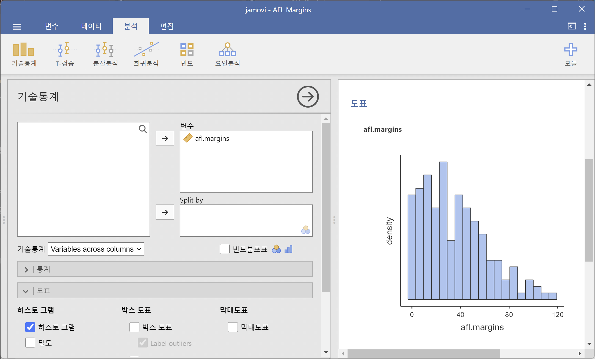
jamovi에서 제공하는 추가 기능 중 하나는 ‘밀도(Density)’ 곡선을 플로팅하는 기능입니다. 이는 ‘도표’ 옵션에서 ‘밀도’ 체크 박스를 클릭하고 ‘히스토그램’ 체크 박스를 해제하면 가능합니다. 이를 통해 얻은 결과가 Figure 5.3 에 표시되어 있습니다. 밀도 도표 연속적인 구간 또는 시간 동안 데이터 분포를 시각화하는 그래프입니다. 이는 커널 스무딩(kernel smoothing)을 사용하여 값을 플로팅하는 히스토그램의 변형으로, 노이즈를 줄이고 보다 부드러운 분포를 보여줍니다. 밀도 도표의 봉우리(peak)는 특정 구간에서 값들이 집중된 곳을 나타냅니다.
밀도 도표가 히스토그램보다 가지는 장점 중 하나는, 구간(빈)의 개수에 의해 영향을 받지 않는다는 점입니다. 예를 들어, 4개의 구간으로 만든 히스토그램은 20개의 구간을 가진 히스토그램에 비해 분포 형태를 충분히 구별하기 어렵습니다. 하지만 밀도 도표는 이러한 문제가 없습니다.
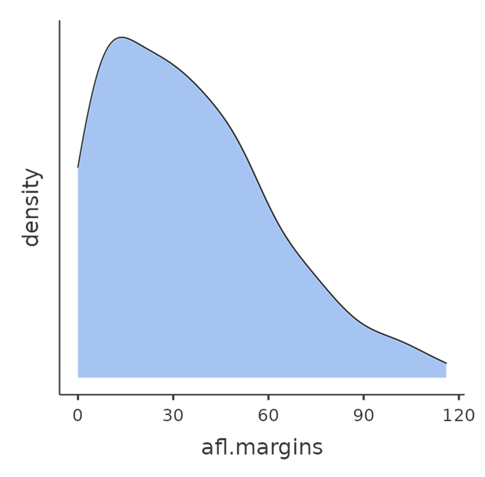
이 그래프를 보고서에 포함할 수 있는 수준의 프레젠테이션 그래픽으로 만들려면 상당한 정리가 필요하겠지만, 데이터의 특성을 설명하는 데는 충분히 유용합니다. 사실, 히스토그램이나 밀도 도표의 가장 큰 장점은 데이터의 전체적인 분포를 보여준다는 것입니다. 이를 통해 데이터의 모습에 대한 좋은 직관을 얻을 수 있습니다.
실습: 히스토그램과 밀도도표 그리기
이 실습을 하려면 Tip 3.1 을 수행하여 lsj-data 모듈이 설치되어 있어야 합니다.
‘파일’-‘열기’-’데이터 라이브러리’를 메뉴에서 선택합니다. 그러면 ’learning statistics with jamovi’라는 폴더가 보일 것입니다. 이 폴더를 선택합니다. 이미 이전 실습에서 이 폴더를 선택했으면 바로 이 폴더가 열릴 수도 있습니다.
데이터 라이브러리에서 ’AFL Margins’를 선택합니다. 그러면 Figure 4.1 같은 데이터가 스프레드시트 뷰에 나타납니다.
‘탐구’-’기술통계’를 선택합니다.
왼편의 ‘기술통계’ 패널에서
afl.margins를 ‘변수’ 상자에 넣습니다.‘도표’ 옵션에서 ’히스토그램’을 체크 합니다. 그러면 Figure 5.2 그래프와 같은 히스토그램이 오른편 결과 패널에 나타납니다.
‘도표’ 옵션에서 ’히스토그램’과 ’밀도’를 체크합니다. 그러면 그래프와 같이 히스토그램 위에 밀도 그래프가 겹쳐 그려져서 오른편 결과 패널에 나타납니다.
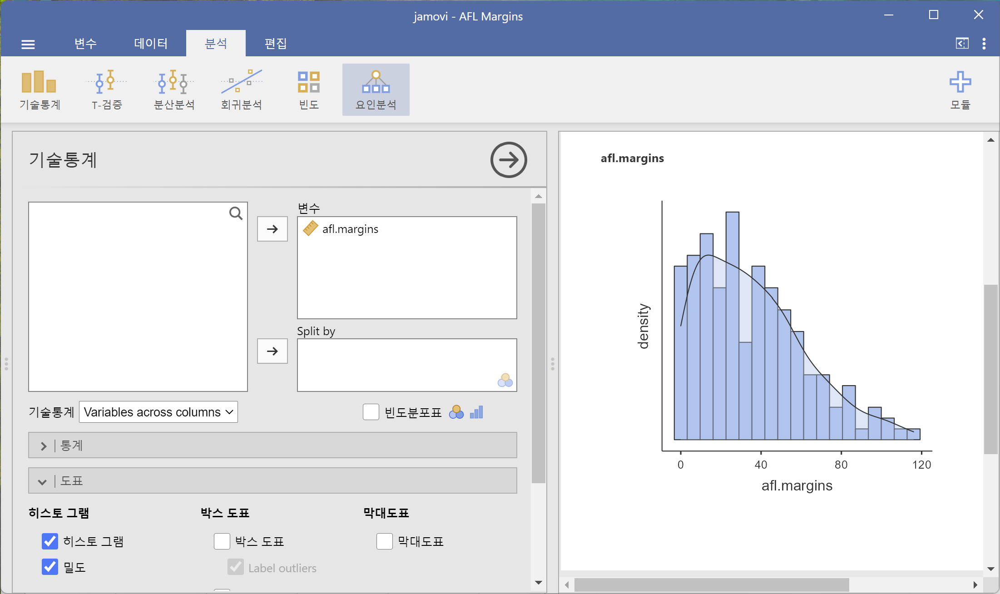
그러나 히스토그램의 단점도 있습니다. 다른 그래프 유형과 달리 20~30개의 히스토그램을 하나의 이미지에 담는 것은 쉽지 않으며, 지나치게 많은 정보를 포함하면 독자를 어리둥절하게 만들 수 있습니다. 또한, 만약 데이터가 명목척도(nominal scale)라면, 히스토그램은 쓸모가 없습니다.
커널 확률 밀도: 확률 밀도 추정하기
커널 확률 밀도(Kernel Density Estimation; KDE)는 확률 밀도 함수(PDF, Probability Density Function)를 추정하는 방법이다. 즉, 히스토그램처럼 데이터를 구간별로 나누어 개수를 세는 것이 아니라, 각 데이터 포인트를 기준으로 연속적인 확률 밀도를 추정하는 방식이다.
KDE는 각 데이터 포인트에 커널 함수(Kernel Function)를 적용하여 확률 밀도를 추정한다. 일반적으로 가우시안(정규분포) 커널을 사용하여 각 데이터 포인트를 중심으로 부드러운 곡선을 생성한다. 그리고는 여러 개의 커널을 합쳐서 전체적인 분포를 나타낸다. 히스토그램보다 부드러운 분포를 얻을 수 있어 데이터의 실제 분포를 더 자연스럽게 표현할 수 있다.
히스토드램과 커널 확률 밀도의 차이를 다음 표와 같이 정리할 수 있다.
| 히스토그램 | 커널 확률 밀도(KDE) | |
|---|---|---|
| 형태 | 막대그래프 형태로 표현됨 | 부드러운 곡선 형태로 표현됨 |
| 구간(bin) 영향 | 구간 개수에 따라 그래프 모양이 달라짐 | 구간(bin) 개념이 없고, 부드러운 분포 표현 가능 |
| 데이터 표현 | 특정 구간에 속하는 데이터 개수를 표현 | 데이터 밀도를 부드러운 확률 분포 형태로 표현 |
5.2 박스도표
히스토그램의 또 다른 대안으로 박스도표(Boxplot)(상자 그림이라고도 합니다)가 있으며, 때때로 “상자와 수염 도표(Box and Whiskers Plot)”라고도 불립니다. 히스토그램과 마찬가지로 박스도표는 구간척도 또는 비율척도 데이터를 다룰 때 가장 적합합니다. 박스도표는 데이터의 중앙값(median), 사분위 범위(interquartile range, IQR), 그리고 데이터의 전체 범위(range)를 간단하게 시각적으로 표현합니다. 이러한 정보를 비교적 간결하게 전달할 수 있기 때문에, 박스도표는 특히 데이터 분석의 탐색 단계에서 매우 인기 있는 통계 그래픽이 되었습니다. 이제 afl.margins 데이터를 예제로 사용하여 박스도표가 어떻게 작동하는지 살펴보겠습니다.
박스도표의 형태를 가장 쉽게 설명하는 방법은 직접 그려보는 것입니다. jamovi에서 ‘박스도표’ 체크 박스를 클릭하면 Figure 5.4 에 나타난 그래프를 얻을 수 있습니다. jamovi는 가장 기본적인 박스도표를 그려줍니다.
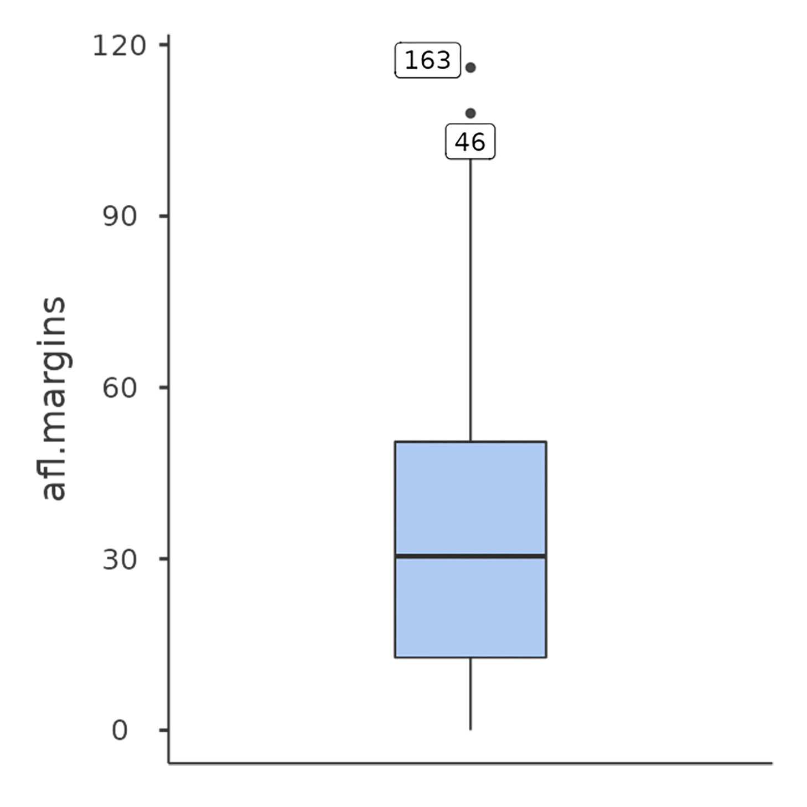
이 그래프를 해석하는 방법은 다음과 같습니다.
- 상자 안의 굵은 선은 중앙값(median)을 나타냅니다.
- 상자의 범위는 제1사분위수(25번째 백분위수)에서 제3사분위수(75번째 백분위수)까지를 포함합니다.
- “수염(whiskers)”은 특정한 범위를 초과하지 않는 가장 극단적인 데이터 지점을 나타냅니다.
기본적으로 수염의 길이는 1.5배의 사분범위(1.5 × IQR)를 기준으로 결정됩니다.
- 하한(lower boundary) = 25번째 백분위수 - (1.5 × IQR)
- 상한(upper boundary) = 75번째 백분위수 + (1.5 × IQR)
이 범위를 벗어난 값은 수염에 포함되지 않고 점 또는 원으로 표시되며, 이러한 점을 특이치(outlier)라고 부릅니다.
afl.margins 데이터에서는 두 개의 값이 이 범위를 벗어나 특이치로 표시되었습니다. 이 상한값은 107이며, 데이터 스프레드시트를 확인해 보면 107을 초과하는 두 개의 데이터(행 번호가 46과 163인 사례)가 존재하는데, 이 값들이 특이치로 그래프에 점으로 표시된 것입니다.
5.2.1 바이올린 도표
전통적인 박스도표의 변형 중 하나가 바이올린 도표(Violin plot)입니다. 바이올린 도표는 박스도표와 유사하지만, 데이터의 다양한 값에서 커널 확률 밀도(kernel probability density)를 추가로 나타낸다는 점이 다릅니다. 일반적으로 바이올린 도표에는 데이터의 중앙값(median)을 나타내는 마커와 사분위 범위(interquartile range, IQR)를 표시하는 상자가 포함되며, 이는 표준 동일합니다.
jamovi에서는 ‘Violin’과 ’상자도표’ 체크 박스를 모두 선택하면 이와 같은 기능을 사용할 수 있습니다. Figure 5.5 에서는 ‘데이터’ 체크 박스도 활성화하여 개별 데이터 점을 그래프에 표시한 예시를 보여줍니다. 하지만 제 개인적인 의견으로는 이렇게 하면 그래프가 너무 복잡해질 수 있습니다. 그래프에서 명확함은 곧 단순함을 의미하므로, 실제 보고서나 발표에서는 단순한 박스도표를 사용하는 것이 더 나을 수도 있습니다.
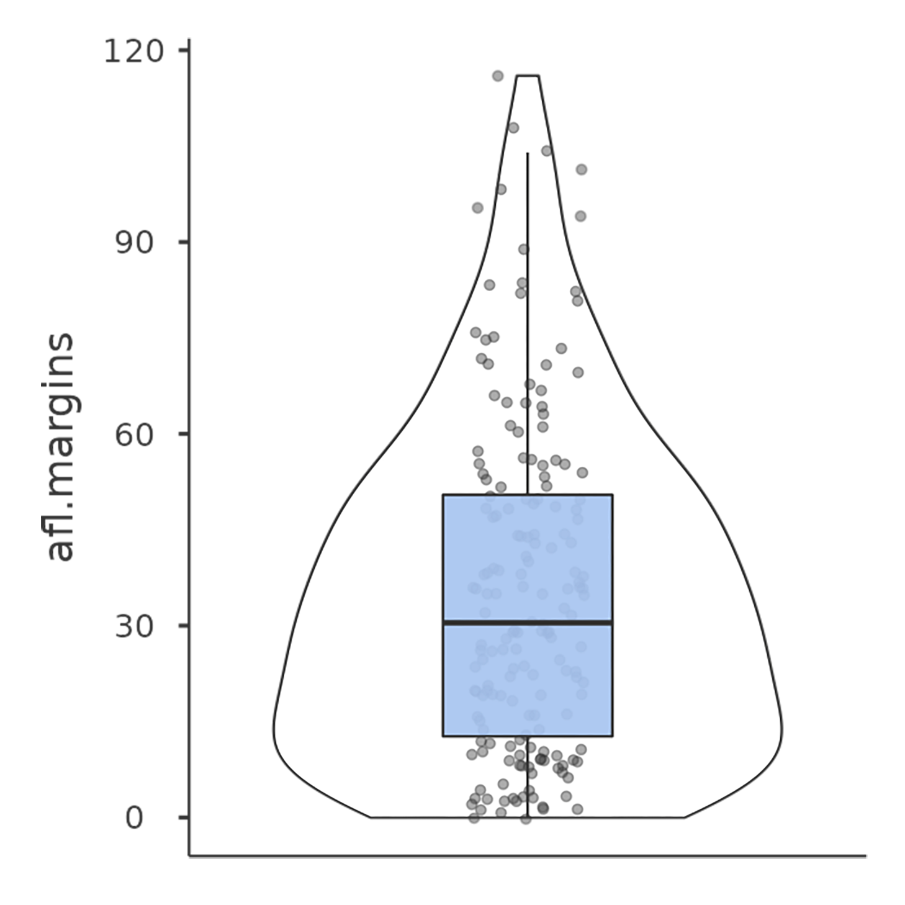
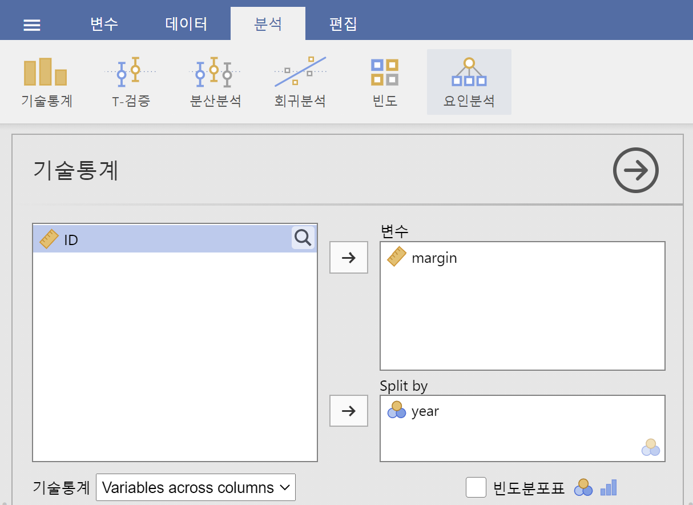
5.2.2 여러 개의 박스도표 그리기
마지막으로 한 가지 더 알아보자. 여러 개의 박스도표를 한 번에 그리고 싶다면 어떻게 해야 할까? 예를 들어, 2010년뿐만 아니라 1987년부터 2010년까지의 모든 연도에 대한 afl.margins 데이터를 각각 별도의 박스도표으로 나타내고 싶다고 하자. 이를 위해 가장 먼저 해야 할 일은 데이터를 찾는 것이다. 해당 데이터는 aflmarginbyyear.csv 파일에 저장되어 있다. 따라서, 이 파일을 jamovi에 불러와서 어떤 데이터가 들어 있는지 확인해 보자.
파일을 확인해 보면, 꽤 큰 데이터 세트이라는 것을 알 수 있다. 이 데이터 세트에는 총 4,296개의 경기 기록과 우리가 관심 있는 변수가 포함되어 있다. 우리가 하고자 하는 것은 jamovi에서 margin 변수의 박스도표를 그리되, 연도별로 개별적으로 나타내는 것이다. 이를 위해서는 연도(year) 변수를 ‘Split by’ 박스로 이동하면 된다. Figure 5.6 에서처럼 설정하면 된다.
그 결과는 Figure 5.7 에서 확인할 수 있다. 연도별로 나뉜 이 박스도표을 보면, 왜 때때로 히스토그램 대신 박스도표를 선택하는 것이 유용한지 알 수 있다. 연도별로 데이터가 어떻게 분포하는지 한눈에 파악할 수 있으며, 너무 많은 정보로 인해 압도되지도 않는다. 만약 같은 공간에 24개의 히스토그램을 억지로 넣으려 했다면 어땠을까? 독자가 유용한 정보를 얻을 가능성은 거의 없었을 것이다.
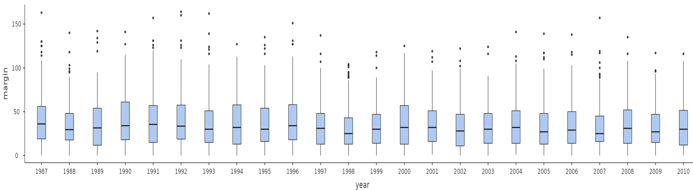
실습: 데이터를 분리하여 박스도표 그리기
이 실습을 하려면 Tip 3.1 을 수행하여 lsj-data 모듈이 설치되어 있어야 합니다.
‘파일’-‘열기’-’데이터 라이브러리’를 메뉴에서 선택합니다. 그러면 ’learning statistics with jamovi’라는 폴더가 보일 것입니다. 이 폴더를 선택합니다. 이미 이전 실습에서 이 폴더를 선택했으면 바로 이 폴더가 열릴 수도 있습니다.
데이터 라이브러리 목록에서 ’AFL Margins By Year’를 선택합니다.
‘탐구’-’기술통계’를 선택합니다.
왼편의 ‘기술통계’ 패널에서
margins를 ‘변수’ 상자에 넣습니다.year를 ‘Split by’ 상자에 넣습니다.‘도표’ 옵션에서 ’박스도표’를 체크 합니다. 박스들이 많아서 특이치의 사례 레이블이 표시되면 번잡하므로
Label outliers의 체크를 해제합니다.
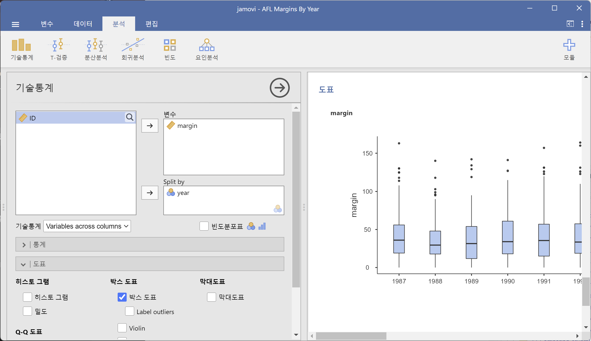
5.2.3 박스도표를 이용한 특이치 탐지
박스도표는 자동으로 특정 범위를 벗어나는 관측값을 분리하여 jamovi에서는 점(dot)으로 표시해 줍니다. 이 때문에 사람들은 박스도표를 특이치(outlier) 탐지를 위한 비공식적인 방법으로 자주 활용합니다. 특이치는 다른 데이터들과 비교했을 때 “수상할 정도로” 먼 값들이다.
예를 들어, margins 데이터에 대한 박스도표를 그렸는데, 그 결과가 Figure 5.8 과 같다고 하자. 두 개의 관측값에서 뭔가 이상한 점이 있다는 것이 분명하다. 두 경기에서 점수 차가 300점을 넘었던 것으로 보인다!1 하지만 이는 직관적으로 말이 되지 않는다. 이렇게 이상한 점이 발견되면, 데이터를 좀 더 면밀히 살펴보아야 한다.
jamovi에서는 이러한 의심스러운 관측값이 어떤 것인지 빠르게 찾아볼 수 있으며, 원시 데이터(raw data)로 돌아가 입력 오류가 있는지 확인할 수도 있다. 이를 수행하는 방법 중 하나는 jamovi에서 ‘박스도표’ 체크박스 옆의 옵션을 선택하여 특이치에 라벨(Label outliers)을 추가하는 것이다. 이렇게 하면 박스도표에서 특이치 옆에 행(row) 번호가 표시되므로, 해당 행을 찾아 극단적인 값을 확인할 수 있다.
좀 더 유연한 방법은 특정 기준을 초과하는 값만 포함되도록 필터(filter)를 설정하는 것이다. 이번 예에서 기준값(threshold)을 300 이상으로 하면 특이치만 찾을 수 있으므로, 필터를 이 값으로 설정할 것이다. 먼저, jamovi의 데이터 창 상단의 ‘필터’ 버튼을 클릭한 다음 필터 입력란에 'margin > 300'을 입력하면 된다. Figure 5.9 에서 설정 방법을 확인할 수 있다.
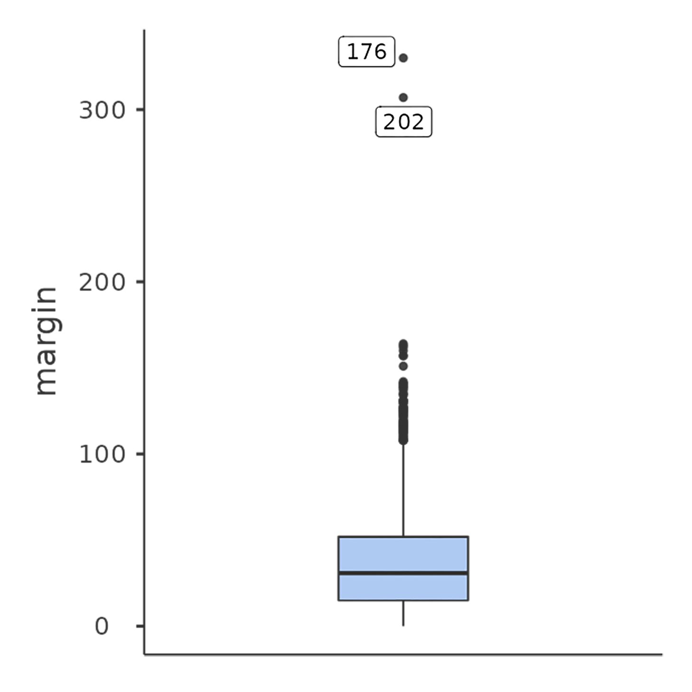
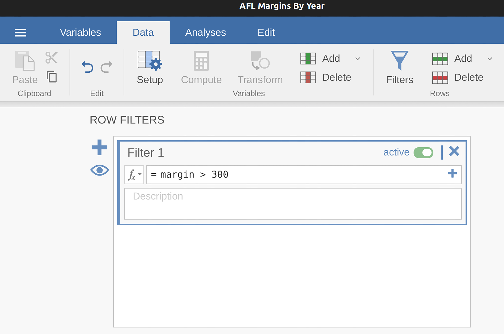 300이다. 창에는 변수, 데이터, 분석, 편집 등의 옵션이 표시되며, 추가(Add), 삭제(Delete), 계산(Compute)과 같은 아이콘이 보인다.">
이 필터를 적용하면 스프레드시트 보기에서 필터를 통과한 관측값만 포함된 새로운 열(column)이 생성된다. 이러한 관측값을 빠르게 식별하는 한 가지 방법은 jamovi에서 ‘빈도표(Frequency table)’를 생성하는 것이다(메뉴: ‘탐구’-‘기술통계’). 단, 빈도표를 만들려면 ID 변수가 명목형(nominal)이어야 한다.
Figure 5.10 을 보면 margin이 300을 초과한 관측값의 ID가 176과 202임을 알 수 있다. 이런 경우, 원본 데이터로 돌아가 어떤 문제가 있었는지 확인하는 것이 좋다.
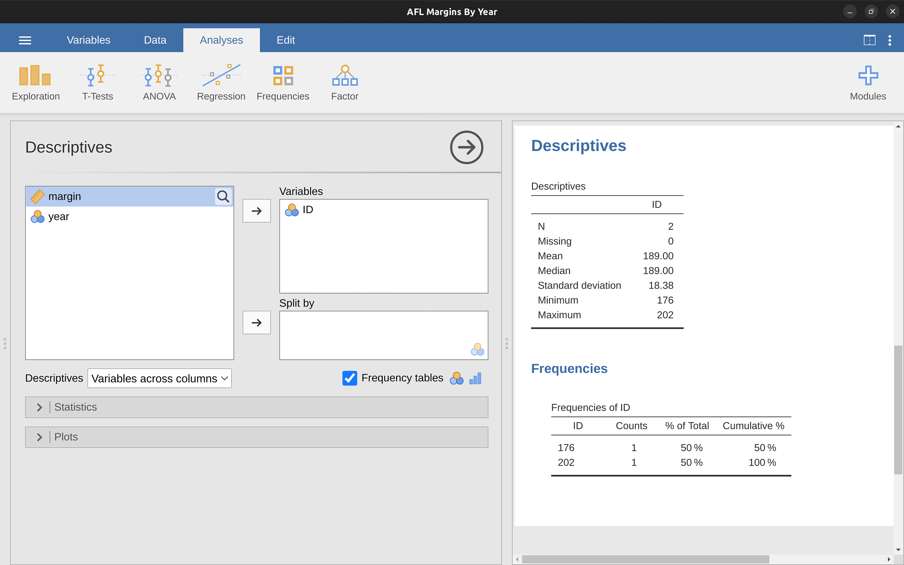
일반적으로 이러한 특이치는 단순한 입력 오류(typo)일 가능성이 크다. 이 예제는 단순해 보일 수 있지만, 실제 데이터 분석에서는 매우 자주 발생하는 문제이다. 현실 세계의 데이터 세트은 많은 오류를 포함하고 있으며, 특히 사람이 직접 입력한 경우에는 더욱 그렇다. 사실, 데이터를 정리하는 과정 자체를 “데이터 정제(data cleaning)”라고 부르며, 이는 데이터 분석에서 상당한 시간을 차지한다. 이 과정에서는 오타(typo), 누락된 데이터(missing data), 기타 오류 등을 찾아내고 수정해야 한다.
한편, 박스도표에서 특이치로 표시된 값이 있더라도, 이를 분석에서 제거할지 포함할지는 데이터의 특성과 분석 목적에 따라 다르다. 따라서, 항상 신중한 판단이 필요하다. 만약 특이치가 합리적으로 보인다면 유지하는 것이 맞을 수도 있다. 이와 관련된 주제는 Section 12.10 및 Chapter 12 에서 다시 다룰 예정이다.
실습: 필터로 특이치 찾기
이 실습을 하려면 Tip 3.1 을 수행하여 lsj-data 모듈이 설치되어 있어야 합니다.
‘파일’-‘열기’-’데이터 라이브러리’를 메뉴에서 선택합니다. 그러면 ’learning statistics with jamovi’라는 폴더가 보일 것입니다. 이 폴더를 선택합니다. 이미 이전 실습에서 이 폴더를 선택했으면 바로 이 폴더가 열릴 수도 있습니다.
데이터 라이브러리 목록에서 ’AFL Margins’를 선택합니다.
‘탐구’-’기술통계’를 선택합니다.
왼편의 ‘기술통계’ 패널에서
afl.margins를 ‘변수’ 상자에 넣습니다.‘도표’ 옵션에서 ’박스도표’를 체크 합니다. 그러면 Figure 5.4 같은 박스도표가 표시됩니다.
박스도표에 표시된 특이치를 살펴보기 위하여 ‘데이터’-’필터’를 선택합니다.
=가 표시된 상자에 필터의 조건인afl.margins > 105를 기술합니다.
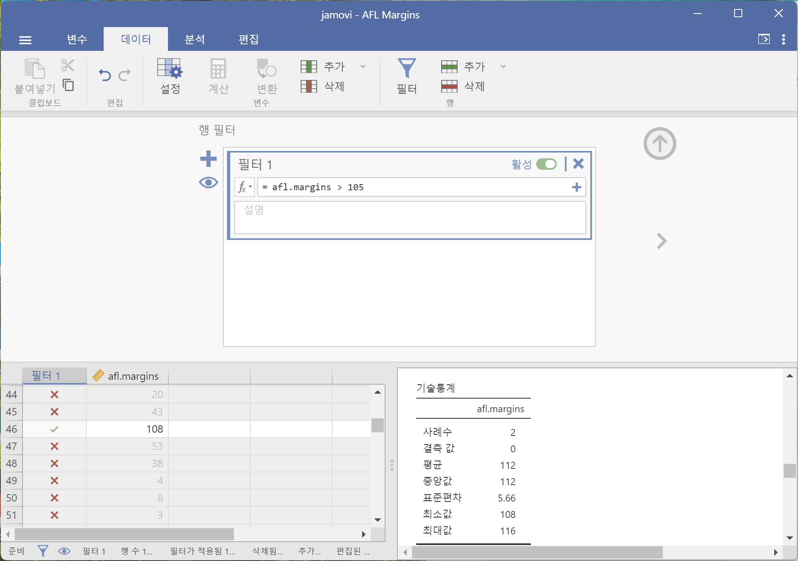
‘행 필터’ 패널에서 위 화살표를 클릭하여 ‘행 필터’ 패널을 닫습니다. 그러면 스프레드시트 보기에서 ’필터1’이라는 열이 생성되어 필터의 조건에 맞는 행만 체크되고 나머지는 해제된 것을 확인합니다. 아울러 기술통계 결과도 필터의 조건만 맞는 행에 대해서만 기술통계량을 구한 것을 확인합니다.
필터 조건을 만족하는 데이터만 보거나 필터 적용을 취소하려면 ‘데이터’-‘필터’ 메뉴를 선택하거나 ‘필터 1’ 열을 더블클릭하여 ‘행 필터’ 패널로 돌아갑니다.
’행 필터’의 왼쪽의 눈 모양 아이콘을 클릭하여 ’필터 열 숨기기’를 합니다. 그러면 필터 조건을 만족하는 행만 표시됩니다.
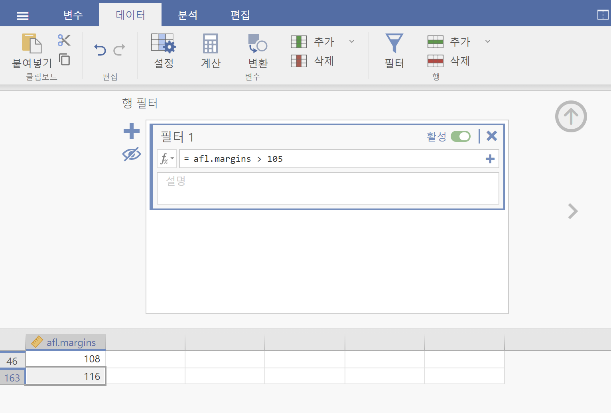
- 필터 적용을 해제하려면 ‘행 필터’ 패널의 오른편 상단의 ‘활성’을 해제하거나 아예 ’x’ 표시를 클릭하여 필터를 삭제할 수 있습니다. 그러면 스프레드시트와 분석의 결과 보기가 모두 원래 데이터를 기준으로 표현되는 것을 확인할 수 있습니다.
5.3 막대도표
자주 사용하게 되는 또 다른 형태의 그래프는 막대도표(Bar graph)입니다. 이번에는 Section 4.1.6 에서 소개했던 afl.finalists 데이터 세트와 afl.finalists 변수를 사용해 보겠습니다. 이 데이터 세트가 포함하는 기간 동안 각 팀이 결승전에 출전한 횟수를 나타내는 막대 그래프를 그리고 싶습니다.
팀이 많지만, 저는 특히 브리즈번(Brisbane), 칼튼(Carlton), 프리맨틀(Fremantle), 리치몬드(Richmond) 이 네 팀에 관심이 있습니다. 따라서 첫 번째 단계는 막대 그래프에 포함할 팀을 이 네 팀으로 제한하는 것입니다. jamovi에서 필터를 설정하는 것은 매우 간단하며, 이전에 사용했던 ‘필터’ 기능을 활용하면 됩니다.
‘필터’ 화면을 열고 다음과 같이 정확히 입력하세요 (작은따옴표도 포함해야 합니다):
afl.finalists \(==\) ‘Brisbane’ or afl.finalists \(==\) ‘Carlton’ or afl.finalists \(==\) ‘Fremantle’ or afl.finalists \(==\) ‘Richmond’ 2
이렇게 설정하면 jamovi의 ‘데이터’ 보기에서 우리가 지정한 팀을 제외한 모든 값이 필터링됩니다. 다음으로 ‘탐구’-‘기술통계’ 창을 열고 ‘막대도표’ 체크 박스를 선택하세요. (이때, afl.finalists 변수를 ‘변수’ 박스로 이동시켜 jamovi가 어떤 변수를 사용할지 알 수 있도록 해야 합니다.)
그러면 Figure 5.11 같은 막대도표가 생성될 것입니다.
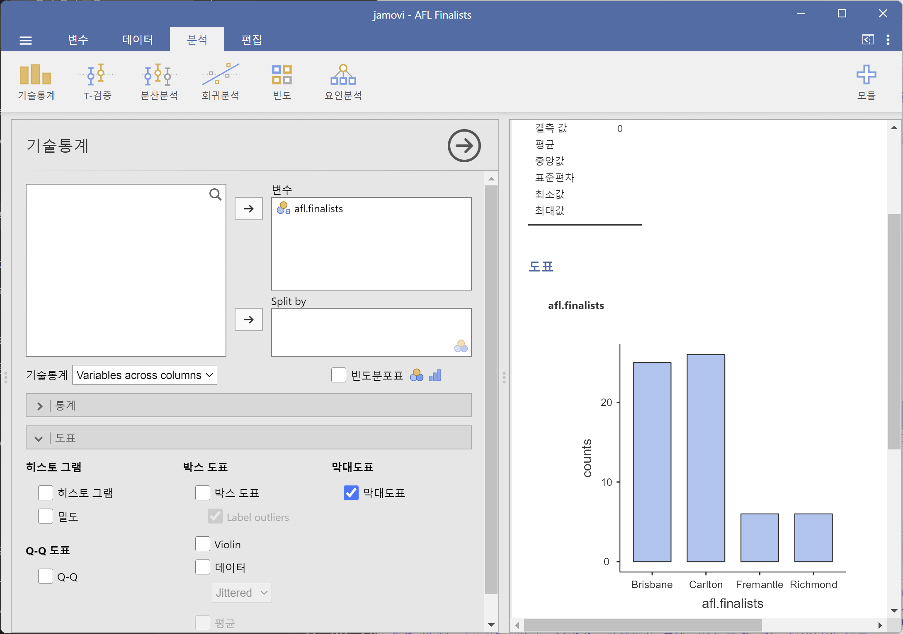
5.4 jamovi에서 이미지 파일 저장하기
잠깐만요! jamovi에서 이렇게 멋진 그래프를 그릴 수 있다 해도, 저장해서 친구들에게 자랑하거나 과제나 논문에 포함할 수 없다면 무슨 의미가 있을까요?
그래프를 저장하는 방법은 매우 간단합니다. 그래프 이미지에서 오른쪽 클릭한 후, ‘png’, ‘eps’, ‘svg’, ‘pdf’ 형식 중 하나로 내보내기(export)를 하면 됩니다. 이 형식들은 모두 깔끔한 품질의 이미지를 제공하므로, 친구들에게 공유하거나 과제 및 논문에 첨부하기에 적합합니다.
5.5 요약
어쩌면 저는 단순한 사람일지도 모르지만, 저는 그림을 정말 좋아합니다. 새로운 과학 논문을 쓸 때마다 가장 먼저 하는 일 중 하나는 어떤 그림을 넣을지 고민하는 것입니다. 제 머릿속에서 논문이란 결국 이야기로 연결된 그림들의 연속일 뿐이며, 나머지는 단순한 장식에 불과합니다.
제가 정말 하고 싶은 말은, 인간의 시각 시스템은 매우 강력한 데이터 분석 도구라는 것입니다. 적절한 정보를 제공하면 독자는 단시간에 엄청난 양의 지식을 얻을 수 있습니다. “백문이 불여일견”이라는 속담이 괜히 있는 것이 아니죠.
이 점을 고려할 때, 저는 이 장이 책에서 가장 중요한 장 중 하나라고 생각합니다.
이번 장에서 다룬 주요 내용은 다음과 같습니다:
- 일반적인 그래프(Common plots): 이 장에서는 통계학자들이 자주 사용하는 표준 그래프에 대해 집중적으로 다루었습니다:
- jamovi에서 이미지 파일 저장하기에서는 생성한 그래프를 내보내는 방법도 함께 설명했습니다.
마지막으로 한 가지 더 설명하고 싶은 것은, jamovi는 깔끔한 기본 그래프를 제공하지만, 현재 그래프를 직접 수정하는 기능은 없습니다. 만약 더 정교하고 강력한 그래픽 기능이 필요하다면, R의 그래픽 패키지들이 훨씬 강력한 도구가 될 수 있습니다. 특히, ggplot2 패키지는 가장 인기 있는 그래픽 시스템 중 하나이며, 이는 Wilkinson(2006)의 The Grammar of Graphics 이론을 바탕으로 만들어졌습니다. (ggplot2 공식 사이트를 참조하세요.) 하지만, ggplot2는 초보자에게 쉽지 않은 도구입니다. R에 대한 이해도가 충분해야 하며, 사용법을 익히는 데도 시간이 걸립니다. 그럼에도 불구하고, ggplot2를 배우는 것은 충분한 가치가 있습니다. 왜냐하면 훨씬 더 강력하고 깔끔한 그래픽을 제공하기 때문입니다.
ggplot2
ggplot2 그래픽 문법을 사용하여 자신만의 다양한 그래프를 그릴 수 있습니다. ggplot2에 입문할 수 있는 좋은 자료로 졸저 [R 프로그래밍의 ggplot2를 이용한 데이터 시각화] (https://kilhwan.github.io/rprogramming/ch-visualization.html) 장 등을 참조하면 좋습니다.